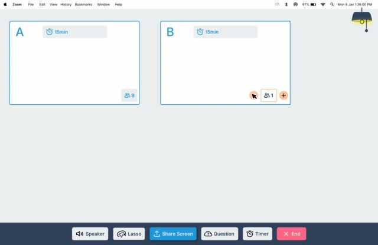
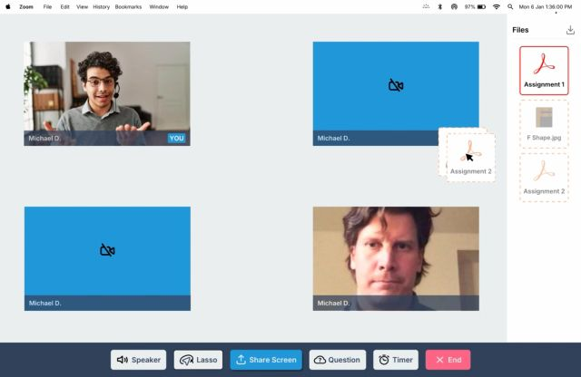
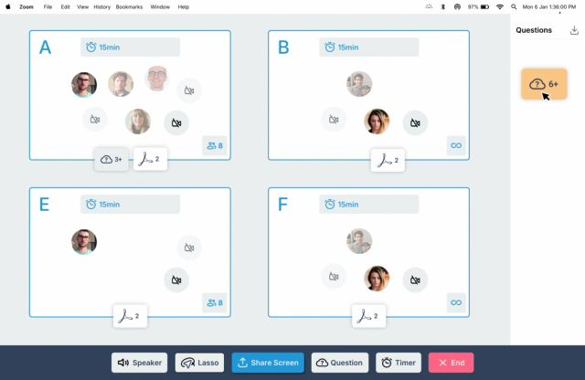
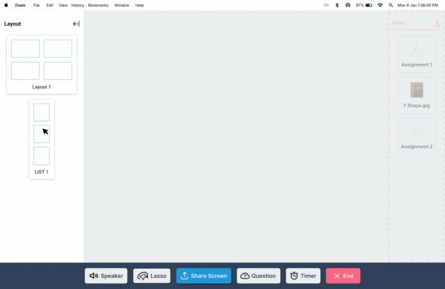
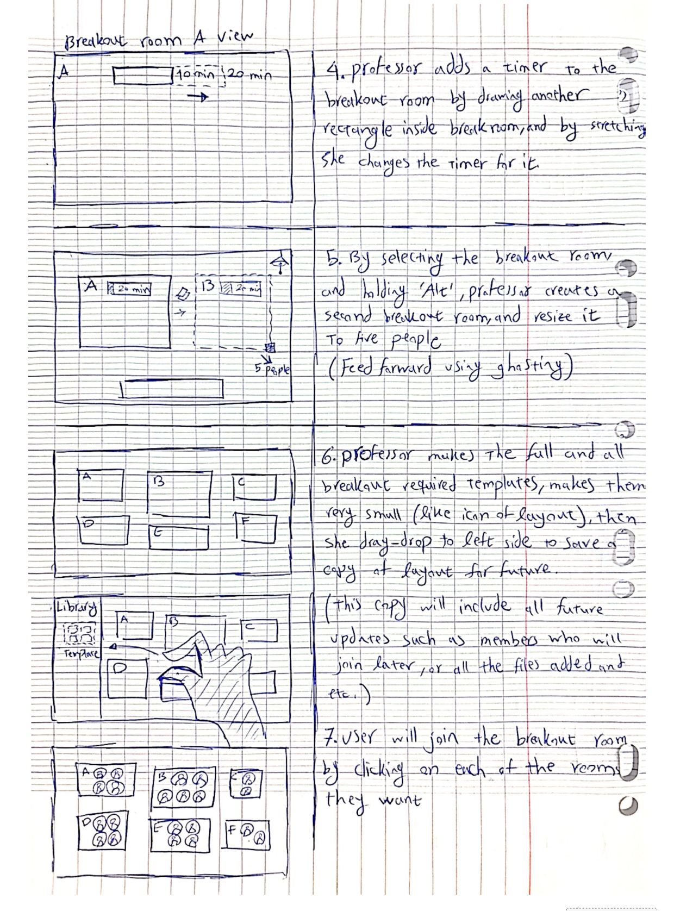
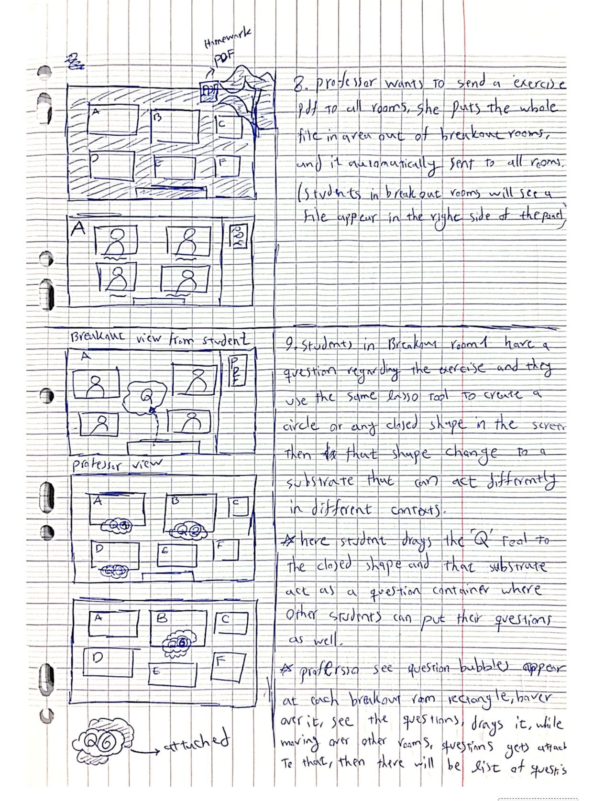

01 · The gap
Breakout tools never moved on
Online teaching grew fast, but breakout rooms stayed a dropdown and a countdown. Two people feel that.
The professor
Has no idea what is happening inside any room, sets every session up by hand, and cannot reuse a configuration.
The student
Has no intuitive way to raise a question or show progress, and loses the files and notes from last week.
02 · The concept
One canvas, direct manipulation
OrchID turns the class into a single shared canvas. Rooms, timers, files and questions are objects you draw and move. The whole interface flips between the lecture and the breakout with one control, a lightbulb on a pull cord, so the professor is never in the wrong mode by accident.
03 · The interactions
Every move maps to a principle
Situated Interaction is about instruments and substrates. Each interaction in OrchID is one of those ideas made concrete.
Draw a room, stretch it to size
The lasso draws a rectangle; that rectangle is the breakout room. Resizing it sets how many people it holds. Draw a smaller rectangle inside and it is a timer; stretch it to change the duration. Reification and adjustment: capacity and time are things you shape, not fields you fill.

Alt-drag to duplicate, with a ghost first
Hold Alt and drag a room to make another, then resize the copy to a different size. A ghost preview shows where it will land before you commit. Feedforward.
The lasso is polymorphic
The same lasso does different things in different places. A student draws a closed shape and it becomes a question container other students can drop questions into. Draw one around a PDF and it becomes a shared document the group edits together. Polymorphism and interaction substrates: a shape you draw becomes a live container.

Everything crosses room boundaries
Files, questions and timers are draggable between rooms. Drop a file in the empty space outside every room and it goes to all of them at once. Question bubbles surface on each room; the professor hovers one to hear that room, or drags a bubble and same-type objects attach to the cursor magnetically as it passes over the others. Feedback, and a substrate that collects.

Connect rooms into groups
To have groups present to each other, the professor links rooms with a rubber-band connection (A to B to C), sets a shared timer, and drags the whole linked set to the library to reuse the arrangement later.

Save the class, rebuild it next week
Shrink the whole layout to an icon and drop it on the left to save it. The saved copy keeps updating, with members who join later and files added during the session. Next week, drag it back and every room rebuilds with its students in place. To reach older material, peel the canvas back; each peel is one week further into the past. Reuse, and a persistent library.

04 · From paper to build
Storyboard, then acted, then built
The design went through three fidelities. Each one tested whether the spatial idea actually held up before we spent more effort on it.
The storyboard
First the whole scenario was drawn by hand over twenty-seven steps: a professor running a design class, switching to breakout, sending an exercise, fielding questions, grouping teams to present, and picking it all back up the following week.


The video prototype
Next we acted the scenario out on video: a paper canvas, hand-drawn rooms and cards, a cut-out toolbar, and a hand performing every gesture. It caught the ordering problems and the moments where a gesture needed feedforward, before any of it was built.
The high-fidelity prototype
Then it became an interactive prototype with the real interface: drawable rooms, draggable files and questions, the library, and the lightbulb toggle.
05 · What it's about
Instruments and substrates, applied
The point of the project was to take a framework from the course, instrumental interaction and substrates, and push it onto a problem people actually have. Breakout rooms are a good test: they are simple, everyone has suffered them, and almost every action a teacher wants is spatial. Treating rooms, files and questions as objects on one canvas made the awkward parts (awareness, setup, memory) fall out of the model instead of needing their own menus.
What I would test next: whether a professor can actually track six rooms of question bubbles without it becoming noise, and whether the peel-back-in-time gesture reads as clearly to a class as it did to us drawing it.